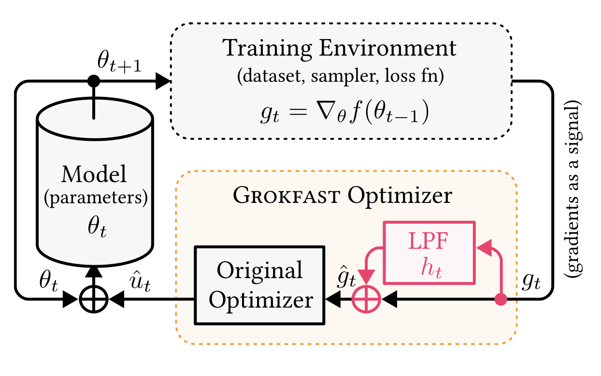
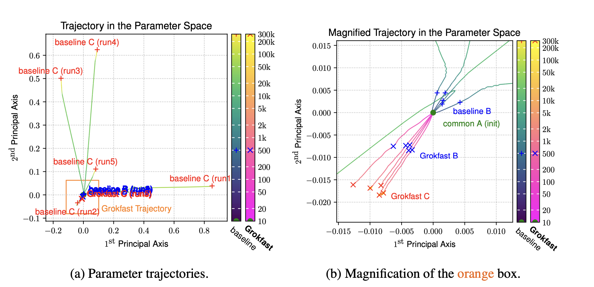

Grokfast
Table of Contents
source: Grokfast - Accelerated Grokking by Ampilfying Slow Gradients - 2405.20233v2.pdf [file:][pdf:][arXiv]
1. Objective
- to accelerate generalization of a model under grokking phenomenon [pg. 1]
- x50 improvement (in some cases)
2. Approach
2.1. Parameters as random signals
- Regard each parameter update as an independent random signal [Page 12]
- discrete random singal \(u(t) = \theta(t+1) - \theta(t)\)
- The signal has fast varying (overfitting) and slow varying (generalization) components
- Represent it in Frequency domain (Fourier transform) [pg. 2]
- Amplify the low frequency component of the signal
2.3. Amplify the low frequency component of \(G(\omega)\)
- Our hypothesis is that amplifying this low-frequency component of \(G(\omega)\) accelerates the speed of generalization under the grokking phenomenon [pg. 2].
3. Algorithm
3.1. Algorithm - Diagram
[pg. 3]

Figure 1: Algorithm: Apply Low Pass Filter on gradients
3.2. Grokfast-MA (Moving Average)
- Compute the average gradient in a sliding window (say w=100) (\(g_{avg}\))
- And add that to the graident \(\hat{g} = g + \lambda g_{avg}\)
Cons:
- Takes up a lot of memory to store \(w\) copies of gradient
- Takes longer time to train [pg. 5]
Hyperparameter:
- w=100 & \(\lambda=5\) worked best [pg. 4]
Result:
- x14 faster grokking
3.3. Grokfast: Grokfast-EMA (Exponential Moving Average)
- Compute EMA of the gradient \(\mu = \alpha \mu + (1-\alpha)g\) [pg. 6]
- Add add that to the gradient \(\hat{g} = g + \lambda \mu\)
Hyperparameters: [pg. 7]
- \(\lambda \in [0.1, 5]\)
- \(\alpha \in [0.8, 0.99]\)
- weight decay (\(w_d\)) dependens on the task
- Formula might look similar to momentum in optimizers but it is different. [pg. 8]
3.4. Multiple Stages of Learning
[pg. 5]
The model sequentially goes through three distinct stages:
- (A) initialized, where both training and validation losses are not saturated
- (B) overfitted, where the training loss is fully saturated but the validation loss is not
- (C) generalized, where both losses are fully saturated.
Best results found with 2 staged algorithm
- Don't apply LPF in stage A
- Apply LPF in stage B, C
Result:
- Further x1.5 faster groking [pg. 5]
4. Ablation
4.1. Are both slow and fast gradients necessary?
4.2. Synergy with weight decay
- When weight decay (wd=0.01) is applied Grokfast-MA got faster by x3.72 [pg. 5]
- Applying same weight decay without Grokfast-MA makes the training unstable
So, Total speedup is x51 (x14 times x3.7)
5. Experiments
- MNIST [pg. 7]
- The handwriting databaset
- 3 layer ReLU MLP
- \(\alpha=0.8, \lambda=0.1, w_d = 2\)
- x22 faster grokking
- QM9 [pg. 8][PyTorch Geometric]
- A graph dataset
- 130,000 molecules with 19 regression targets
- GCNN
- \(\alpha=0.8, \lambda=1, w_d = 0.01\)
- IMDb [pg. 8]
- Dataset of movie reviews
- Sentiment analysis
- 2 layer LSTM
- \(\alpha=0.98, \lambda=2, w_d = 10\)
6. Visualization Attempt
6.1. Approach
6.2. Visuals

Figure 2: Path in Parameter space
7. Misc
- Nanda et al. [2023] argued that grokking does not occur without proper regularization. [pg. 10]
- Techniques such as weight decay, L2 norm, and dropout induce grokking, but L1 norm does not [pg. 10]
- On the other hand, Thilak et al. [2022] argued that grokking can occur without explicit regularization, attributing this to the optimizer’s “visible slingshot mechanism” acting as an implicit regularizer [pg. 10]